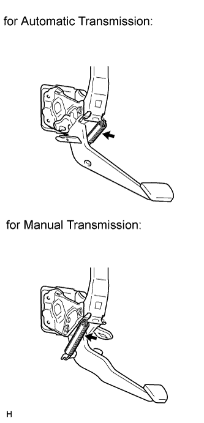
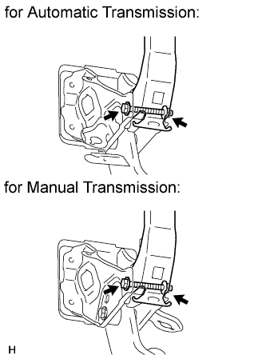
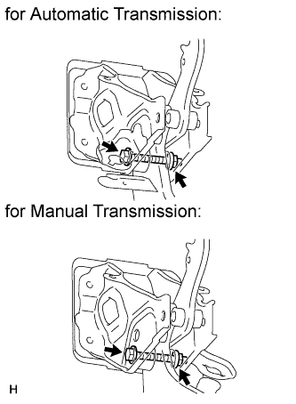
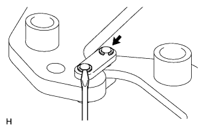
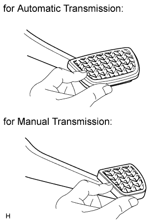

BRAKE PEDAL (for LHD) > DISASSEMBLY |
| 1. REMOVE BRAKE PEDAL RETURN SPRING |
 |
Remove the return spring.
| 2. REMOVE BRAKE PEDAL SUPPORT REINFORCEMENT |
 |
Remove the bolt and nut, then remove the brake pedal support reinforcement from brake pedal support.
| 3. REMOVE BRAKE PEDAL SUB-ASSEMBLY |
 |
Remove the bolt and nut, then remove the brake pedal sub-assembly from the brake pedal support.
Remove the 4 brake pedal bushes from the brake pedal and brake pedal lever.
Remove the 2 collars from the brake pedal and brake pedal lever.
| 4. REMOVE BRAKE PEDAL LEVER SUB-ASSEMBLY |
 |
Using a screwdriver, remove the 2 E-rings from the brake pedal link.
Remove the 2 brake pedal links and 2 brake pedal shaft collars.
Remove the brake pedal lever from the brake pedal.
| 5. REMOVE BRAKE PEDAL PAD |
 |
Remove the brake pedal pad from the brake pedal sub-assembly.
| 6. REMOVE STOP LIGHT SWITCH MOUNTING ADJUSTER |
Remove the stop light switch mounting adjuster from the brake pedal support.
| 7. REMOVE BRAKE PEDAL SUPPORT SUB-ASSEMBLY |